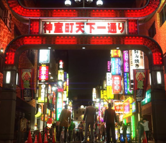

Análisis: Denshattack!
La locura de los trenes y el skate hecha en Barcelona evoca a una epóca ya pasada con un estilo e indentidad únicos

Prensa especializada de videojuegos desde una perspectiva jóven e independiente
Artículos y análisis que pueden interesarte
La locura de los trenes y el skate hecha en Barcelona evoca a una epóca ya pasada con un estilo e indentidad únicos
El diseño del inmenso mundo abierto de Hyrule como respuesta en una época que nos pide ir cada vez más deprisa
Ya se han publicado los infrmes financieros de ambas compaías y los resultados son sorprendentes